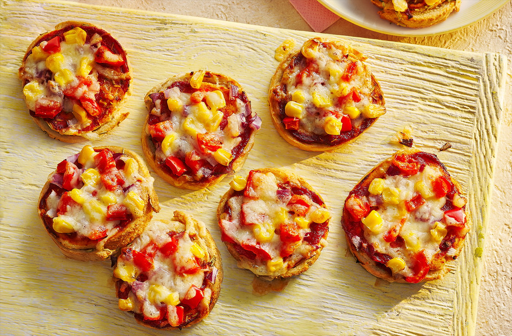

YOU Foods - Recipe Collection
Pinwheel Pizza Crusts
Prep: 20 min | Cook: 15 min | Serves: 4–6

Turn leftover bread into tasty pinwheel pizzas with simple toppings.
Nutritional Info (Per Serving)
| Nutrient | Amount | % DV |
|---|
| Energy | 61 kcal | 3% |
| Fat | 2 g | 3% |
| Saturates | 1 g | 6% |
| Sugars | 2 g | 2% |
| Salt | 0.2 g | 4% |
Ingredients
- 1 egg, beaten
- 6–8 bread crusts, cut into strips
- 4 tbsp tomato puree
- 30 g cheddar cheese, grated
- Red pepper, onion, sweetcorn
- 1 tbsp milk powder
- 1 tsp rosemary
Method
- Preheat oven to 200°C. Line tray with paper.
- Mix egg, milk powder, rosemary.
- Roll bread strips, dip in mix, place on tray.
- Add puree, veg, cheese.
- Bake 15 min until golden.
Chef’s Tips
- Bread
- Day-old rolls better
- Freezing
- Freeze before baking, add 5 min
- Flavor
- Try herbs or different cheese